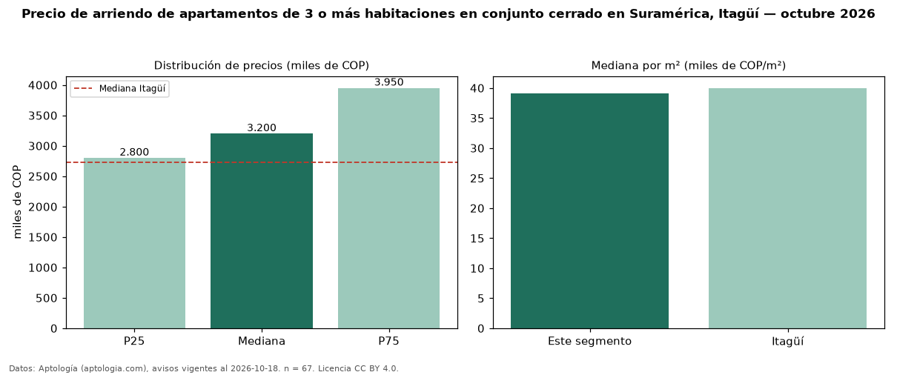

Precio de arriendo de apartamentos de 3 o más habitaciones en conjunto cerrado en Suramérica, Itagüí — octubre 2026
COP 3,20 millones al mes es el canon mediano de apartamentos de 3 o más habitaciones en conjunto cerrado en arriendo en Suramérica, Itagüí (n = 67 avisos). Eso es 3 % más que la mediana de los apartamentos de 3 o más habitaciones en arriendo de Suramérica (COP 3,10 millones, n = 107); este segmento reúne el 63 % de esos avisos. Por metro cuadrado, la mediana es COP 39.126/m² al mes (n = 66), 2 % por encima de los apartamentos de 3 o más habitaciones en arriendo de Suramérica (COP 38.235/m²). El área mediana anunciada es 80 m². El estrato más frecuente es 4 (87 % de los avisos con estrato). La mediana de todos los apartamentos en arriendo de Itagüí es COP 2,73 millones (+17 % de diferencia). La mitad central de los avisos va de COP 2,80 millones a COP 3,95 millones (razón 1,4), una dispersión moderada. Datos: Aptología (aptologia.com), CC BY 4.0 — https://www.aptologia.com/arriendo/itagui. Archivos: PDF, CSV con las cifras y gráfica PNG.

| Avisos únicos | 67 |
|---|---|
| Percentil 25 | COP 2.800.000 |
| Mediana | COP 3.200.000 |
| Percentil 75 | COP 3.950.000 |
| Mediana por m² | COP 39.126 |
Fuente: avisos vigentes de portales inmobiliarios recopilados por Aptología, deduplicados (mínimo 30 avisos únicos por celda). Precios pedidos, no cerrados. Fecha: 2026-10-18.